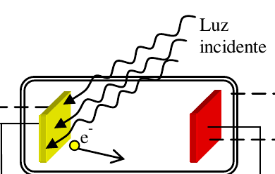
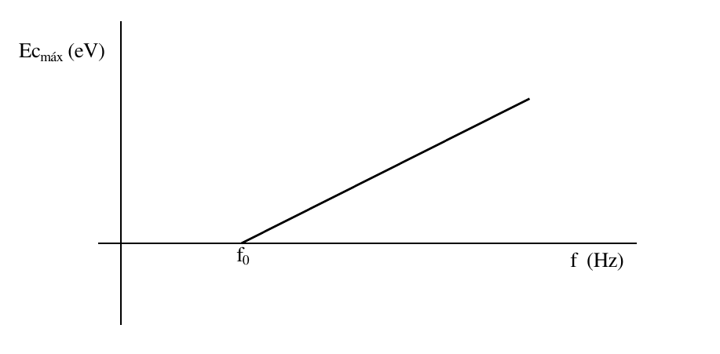
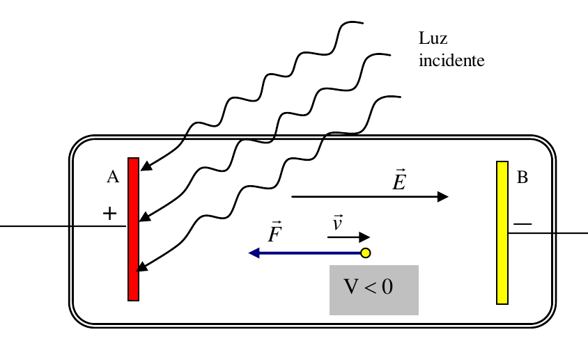
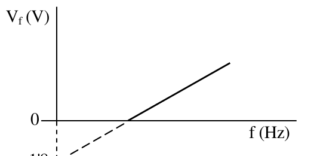

- Consiste en la emisión de electrones por un metal cuando se le incide con radiación electromagnética.
- Descubierto por Hertz, al usar radiación ultravioleta sobre Zinc.

Explicación clásica:
- Los $e^{-}$ no se emiten de manera instantánea.
- La emisión de se produce con cualquier frecuencia.
- La energía cinética de los $e^{-}$ emitidos depende de la cantidad de radiación (intensidad).
- El número de $e^{-}$ depende la intensidad de la luz.
Observación real:
- La emisión no es instantánea.
- La emisión no se produce hasta que no se supera una cierta frecuencia, la llamada frecuencia umbral.
- La frecuencia umbral depende del tipo de material.
- La energía cinética depende de la frecuencia de la radiación, no de la cantidad de radiación (intensidad).
- Los $e^{-}$ emitidos si depende la intensidad de radiación (igual que en la explicación clásica).
EFECTO FOTOELÉCTRICO SEGÚN EINSTEIN (1905-Premio nobel):
- Aplica las hipótesis de Planck.
- Supone la que la radiación está cuantizada en partículas llamadas fotones, es decir la luz se puede comportar como una partícula.
- La energía de un fotón viene dada por: $\color{red}{E_f = h \cdot f}$.
- El fotón al chocar con el electrón le traspasa su energía.
- El electrón, antes de ser emitido, debe vencer la atracción nuclear a esto se le llama trabajo de extracción($W_{ext}$) --> $W_{ext}=h \cdot f_0$ donde $f_0$ es la frecuencia umbral del metal. ($\lambda_0=\frac{c}{f_0}$).
- Si la energía del fotón no supera al trabajo de extracción no se emite el electrón. Si es mayor, la energía sobrante se transformará en energía cinética para el electrón.
$$\boxed{E_{foton}=W_{extr} +E_c} \rightarrow h\cdot f = h \cdot f_0 + \frac{1}{2}m\cdot v^2 \rightarrow \boxed{E_c= h \cdot (f-f_0)} $$

La pendiente de la recta es la constante de Planck.
POTENCIAL DE FRENADO ($V_r$).
- Experimentalmente la velocidad de los electrones se puede calcular frenando los electrones con ayuda de un campo eléctrico. Esto es conectando una corriente eléctrica que controlamos mediante su diferencia de potencial. Cuando se dejan de emitir electrones se ha llegado al potencial de frenado.

$\Delta E_m = 0 \rightarrow \Delta E_c + \Delta E_p = 0 \rightarrow 0-Ec + eV_r - 0=0 \rightarrow \boxed{V_r=\frac{E_c}{e}}$

De esta gráfica la pendiente es $h/e$.
Puedes observar una simulación de este efecto desde la página del PHET.